— CASE STUDY · CONECTA-TCU · 2018–2022
CONECTA-TCU.
Integrando o TCU, a Administração Pública e o cidadão — A experiência do usuário no sistema CONECTA-TCU
01 — contexto
A realidade dos processos em tramitação no Brasil.
De acordo com o CNJ em 2018 existiam mais 80 milhões de processos em tramitação em todo o Brasil. Alguns desses processos são resultados de irregularidades e de interesse do Tribunal de Contas da União que, após julgados, geram acórdãos (decisões) e, por sua vez, geram determinações e recomendações que devem ser cumpridas pelos órgãos da administração pública direta e/ou indireta. Para dar andamento à processos, os órgãos públicos precisam se comunicar, enviando e recebendo informações.
02 — cenário
Hoje, quase a totalidade das comunicações entre o TCU e órgãos públicos é intermediada pelos Correios (envio e recebimento), o que gera elevado gasto de dinheiro público, pouca transparência e muita lentidão no processo, principalmente no que envolve ciência e monitoramento das determinações. Abaixo, seguem os detalhes:
Tempo de Ciência
O tempo para ciência de determinação, desde a expedição do TCU até a devolutiva do órgão, é, em média, de 15 dias.
Informações Descentralizadas
As informações sobre processos, acórdãos e determinações não são centralizadas, sendo necessário acessar vários sistemas para o cumprimento das tarefas, gerando lentidão e falta de transparência.
Custos Elevados
Os contratos de remessa física entre o TCU e os Correios custam na casa de milhões de reais dos cofres públicos.
03 — o desafio
PROBLEMA CENTRAL
"Como podemos promover transparência e comunicação mais assertiva e célere com os demais órgãos?"
04 — resultados esperados
Para cumprir o desafio, foi estabelecida a necessidade de alcançar quatro objetivos fundamentais:
Facilitar a consulta e visualização de informações referente a processos, acórdãos e determinações expedidas pelo TCU para os órgãos da administração pública.
Diminuir o tempo e custos para envio e recebimento de comunicações entre o TCU e os órgãos públicos.
Reduzir a burocracia envolvida na tramitação das notificações e respostas.
Ter mais transparência nas etapas e para acesso aos documentos oficiais.
05 — meu papel
Atuação end-to-end e facilitação de processos.
Nesse projeto, ajudei a pensar a estratégia UX do início ao fim e dar suporte no desenvolvimento do sistema junto com a equipe de desenvolvedores, requisitos e o PO. Facilitei processos e workshops para criação de novas funcionalidades, fiz pesquisas, sugeri métricas e projetei melhores experiências de uso e de interface do sistema.
06 — o processo
O processo de UX do Conecta TCU foi estruturado para garantir clareza, alinhamento e evolução contínua do produto. Ele parte do descobrimento, onde entendemos o problema e as necessidades reais dos usuários. Em seguida, avançamos para definição, ideação, prototipação e validação, iterando sempre que necessário. A partir dessas etapas, o desenvolvimento ocorre em ciclos de releases, garantindo entregas constantes e melhorias progressivas.
O processo de UX Design
6.1 — Descoberta
Entrevistas Exploratórias
Para entender o fluxo de envio e recebimento de determinações, foram feitas entrevistas exploratórias com os POs do sistema CONECTA-TCU, utilizando perguntas fechadas e abertas. A partir dessas informações, conseguimos resumir o processo da seguinte maneira:
- O TCU envia pelos Correios um ofício para o órgão da administração pública comunicando que uma determinação deve ser cumprida;
- A determinação chega até o órgão, é recebida geralmente pelo protocolo, é encaminhada para a área responsável e um aviso de recebimento é enviado ao TCU;
- A área responsável dentro do órgão pode solicitar mais prazo ou responder à determinação. Nos dois casos, um ofício é enviado de volta ao TCU pelos Correios, sendo que a resposta de comunicação pode demorar de 30 a 90 dias para ser enviada e pode conter uma grande quantidade de páginas impressas;
- O TCU analisa a resposta que pode ser devolvida para o órgão para ser retificada ou dada como concluída e, por fim, é arquivada.
*Importante frisar que, durante todo esse processo, a determinação é monitorada.
Personas Mapeadas
São três os perfis de usuários do CONECTA-TCU: auditores de controle externo do TCU, auditores de órgãos e empresas públicas e advogados e representantes legais da AGU. Para ajudar o time a focar melhor nas necessidades desses usuários, criamos personas com esses perfis.
6.2 — Definição
Product Backlog Building: O levantamento de requisitos foi feito utilizando o Product Backlog Building junto ao PO e interessados internos (TCU), resultando em várias funcionalidades que foram organizadas e priorizadas em 6 releases.
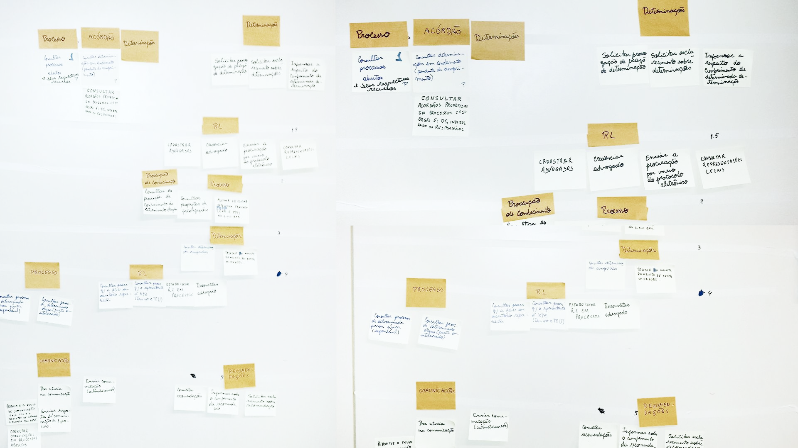
Criação do Product Backlog Building para levantamento de requisitos
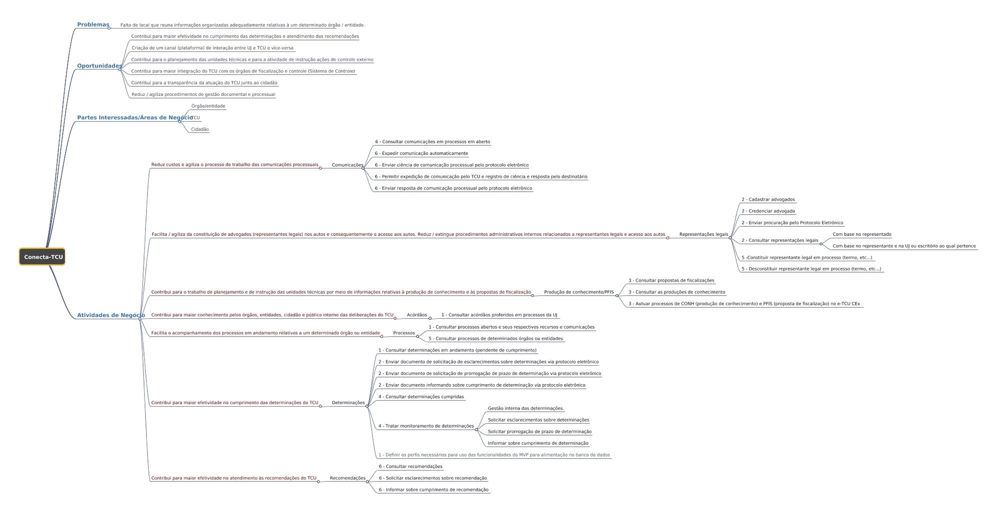
Mapa mental do PBB
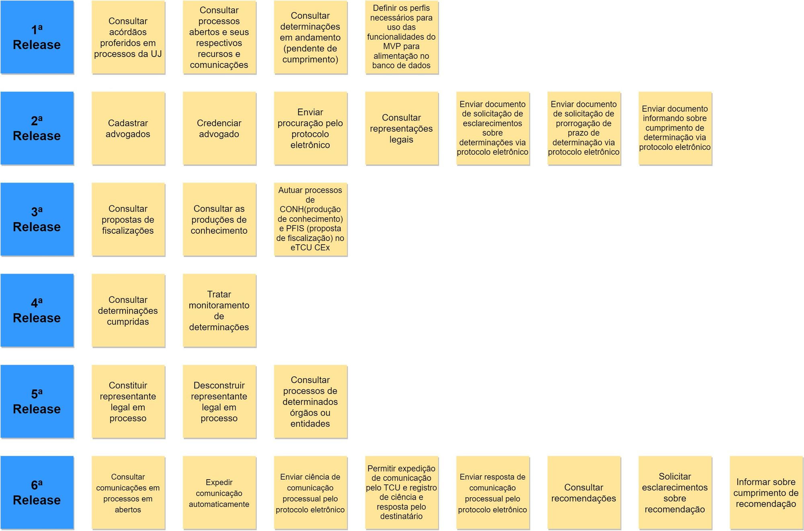
Priorização dos requisitos
Design Sprint com Público Externo
Rodamos um Design Sprint focado no público externo, isto é, com auditores e servidores de outros órgãos públicos para entender melhor suas necessidades em relação ao acesso a processos, acórdãos e determinações. Para mais detalhes sobre o Sprint, seguem os documentos para consulta:
6.3 — Ideação
Fluxo de Tarefas: Criamos fluxos de tarefas para cada um dos três perfis básicos do sistema CONECTA-TCU:
- Perfil de consulta de acórdãos, processos ou determinações;
- Perfil de operador de comunicações;
- Perfil de advogado ou representante legal.
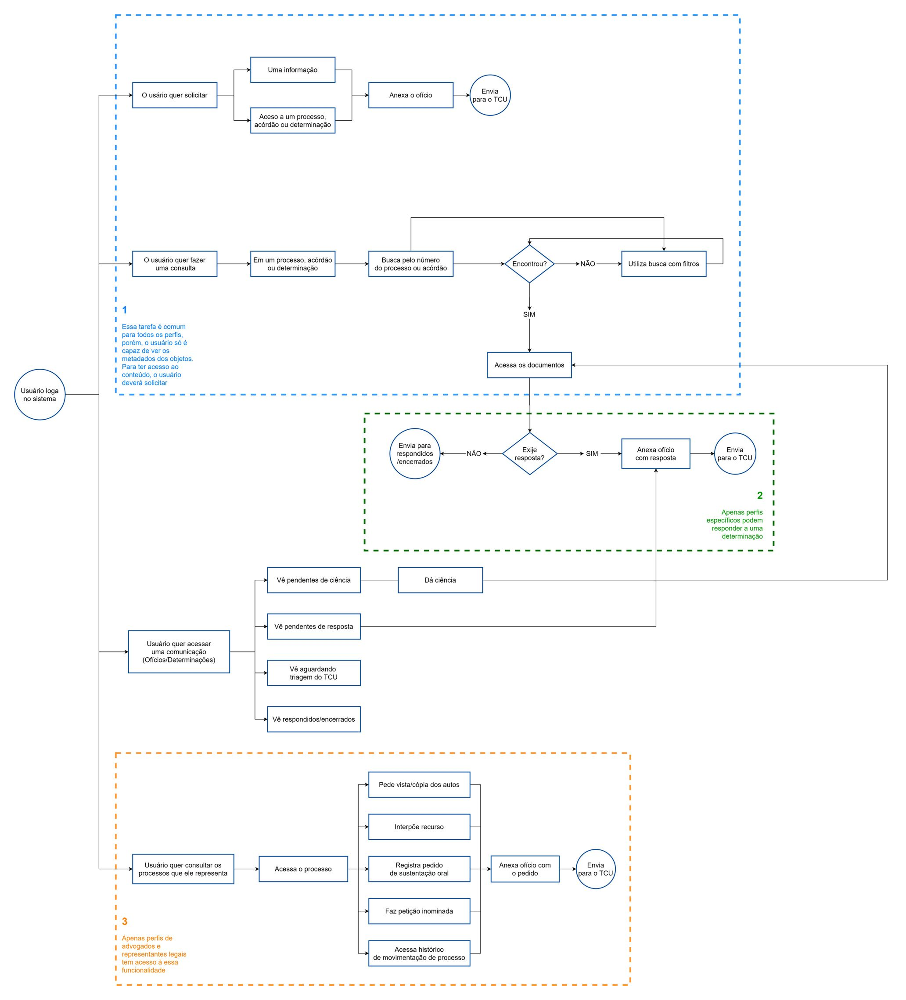
Fluxo de tarefas
Arquitetura da Informação: Além do fluxo da tarefa, estruturamos e organizamos as seções do sistema, divididas entre os três principais perfis.
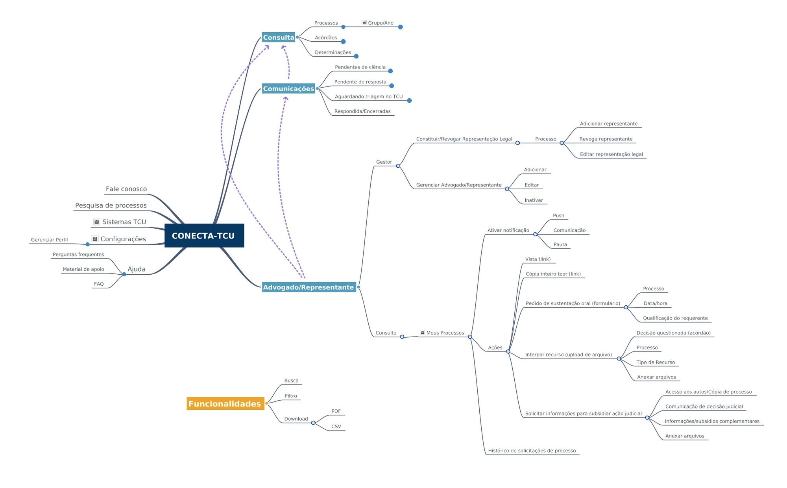
Arquitetura da informação do sistema CONECTA-TCU
6.4 — Prototipação
A partir do protótipo construído no Design Sprint e com base nos problemas e desafios estabelecidos, esboçamos algumas opções de tela inicial baseada em interfaces de dashboard de modo a otimizar a experiência de cada perfil de usuário. Durante o processo de redesenho, os cards da interface atual foram aprimorados, tanto visualmente como em questões de funcionalidades, por exemplo, a disponibilidade de operações individuais ou em lote.
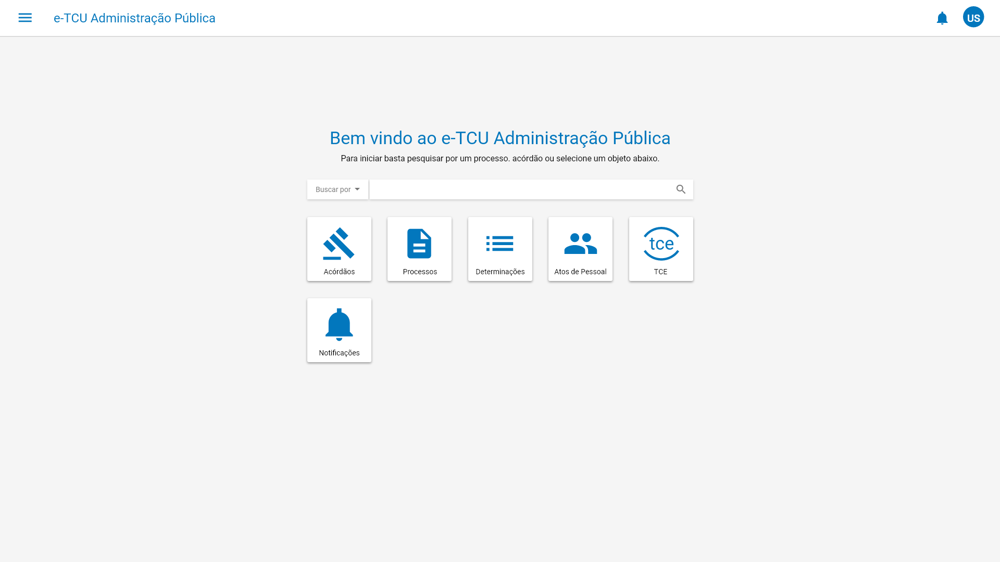
Design Sprint: Página inicial
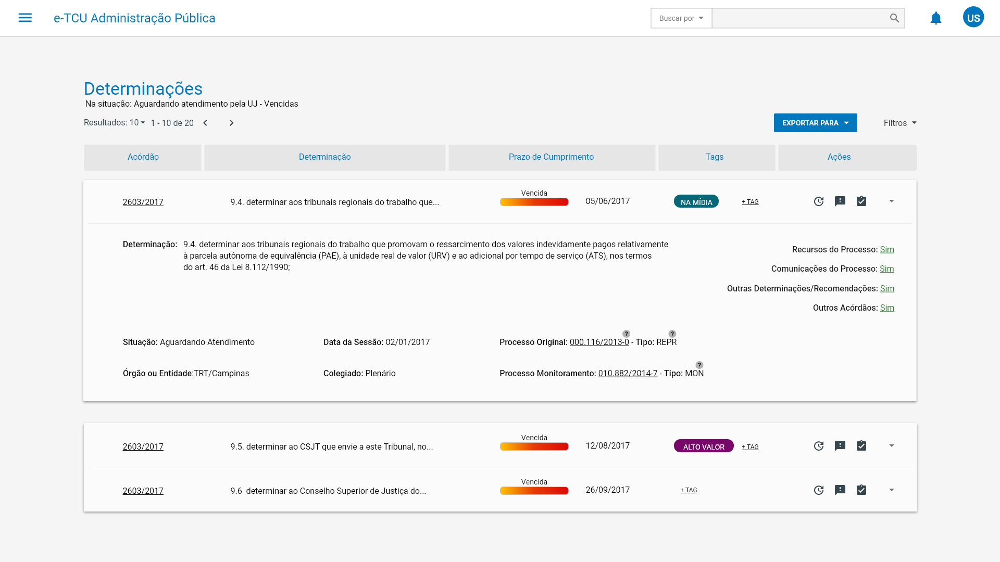
Design Sprint: Cards e operações
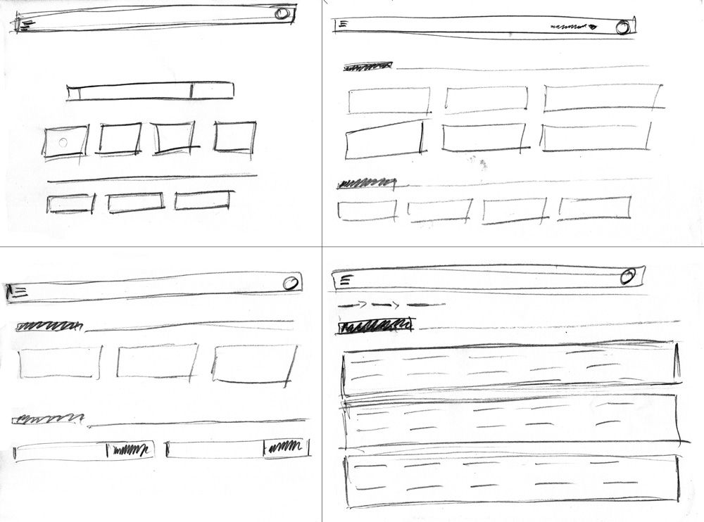
Baixa Fidelidade: Página inicial, blocos e cards
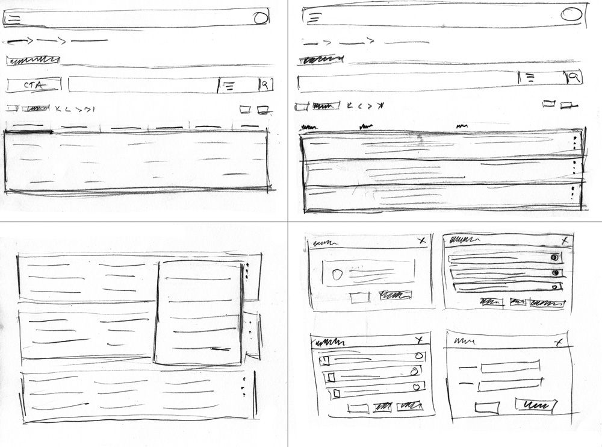
Baixa Fidelidade: Abas, operações e upload
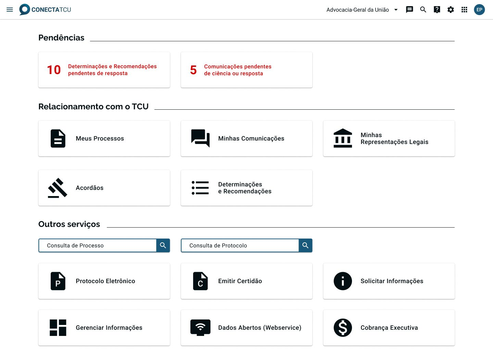
Alta Fidelidade: Página inicial modular
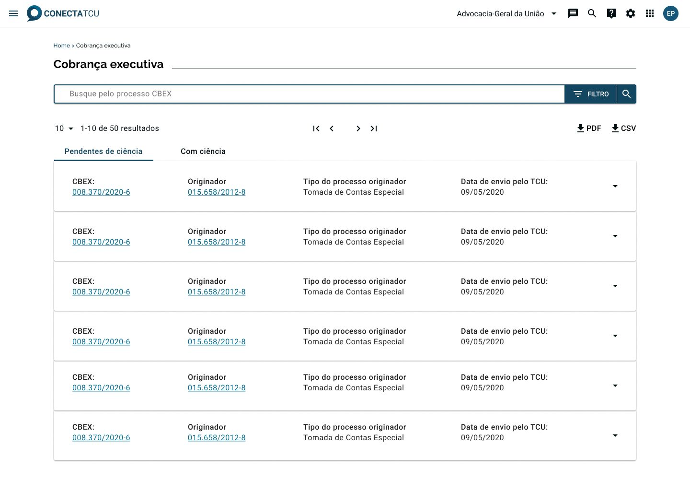
Alta Fidelidade: Cards sem operações
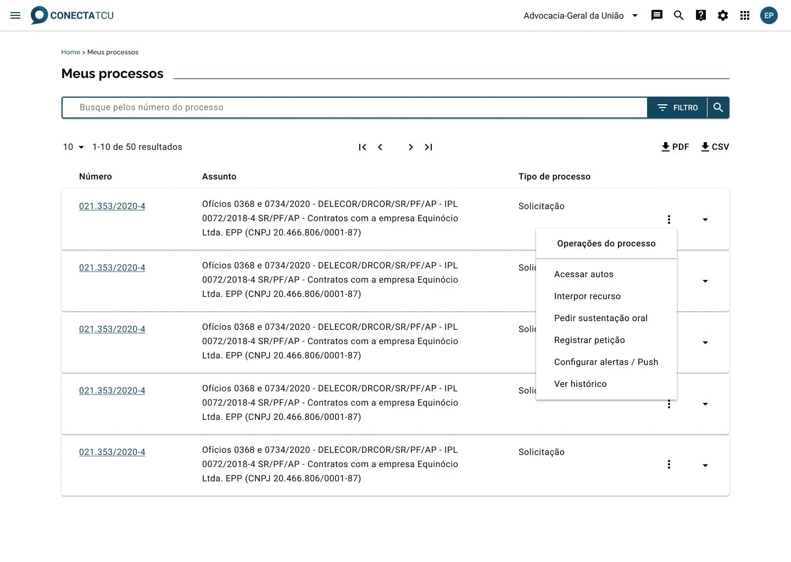
Alta Fidelidade: Cards com operações
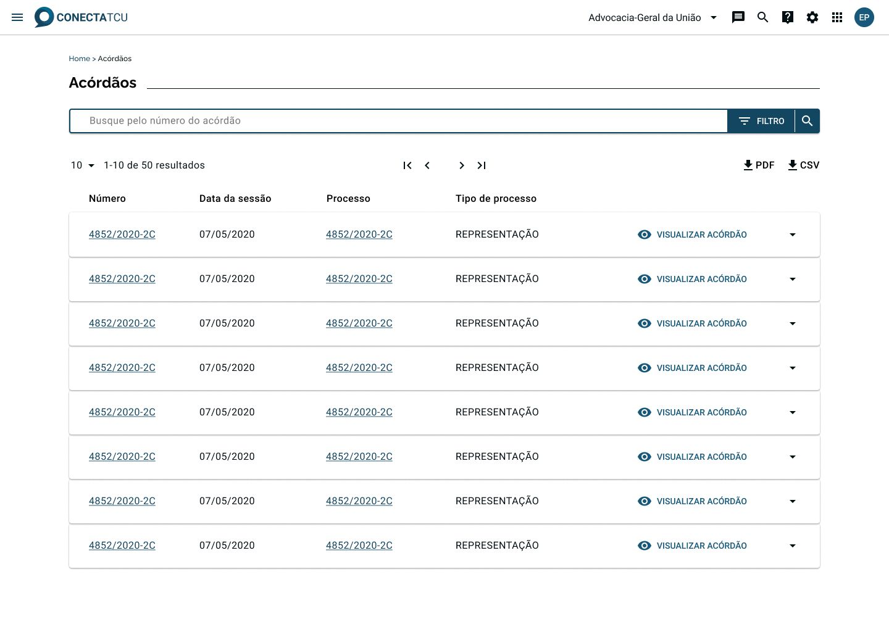
Alta Fidelidade: Cards de acórdãos
6.5 — Métricas & Análise de Usabilidade
Um dos principais desafios em sistemas como este é escolher KPIs que representem bem resultados quantitativos, como conversão, engajamento e sucesso de tarefa, e qualitativos, como expectativas, desempenho e usabilidade, permitindo medir a performance da plataforma. Assim, definimos:
- Valor e objetivo: Aumentar a transparência dos processos internos, dar celeridade ao cumprimento das determinações e diminuição de custos;
- Metas: Reduzir a quantidade de dias da ciência de 15 para 5, diminuir em 50% os chamados abertos buscando suporte, reduzir o tempo de cumprimento das determinações de 180 dias para 90 dias, e diminuir em 20% o valor de repasse para os Correios em virtude de entregas de processos de determinação;
- Frequência de coleta de dados: Criar ferramenta que colete os dados diariamente;
- Prazo: Ter esses dados a partir de 6 meses a 1 ano, a depender das funcionalidades já implementadas na plataforma;
- Apresentação: Relatórios e dashboards gerenciais.
Para mapear e gravar todos esses dados, foi desenvolvido um sistema chamado TCU-GERENCIAL que armazena e apresenta dados estatísticos de uso do sistema CONECTA-TCU.
Avaliação da Usabilidade via SUS (System Usability Scale)
Utilizamos o modelo SUS para avaliar a efetividade, eficiência e satisfação da interface através de 10 perguntas respondidas pelos usuários (escala de 1 a 5):
- Eu prefiro usar esse sistema ao invés do outro que temos;
- Eu acho o sistema complexo;
- Eu achei o sistema fácil de usar;
- Eu precisei de ajuda para usar o sistema;
- Eu acho que as várias funções do sistema estão muito bem integradas;
- Eu acho que o sistema apresenta muita inconsistência;
- Eu imagino que as pessoas conseguirão usar esse sistema rapidamente;
- Eu achei o sistema complicado de usar;
- Eu me senti confiante ao usar o sistema;
- Eu precisei aprender várias coisas antes de conseguir usar o sistema.
A análise de usabilidade (SUS) foi feita de maneira online e moderada, onde os usuários cumpriram tarefas estruturadas. Tivemos um total de 50 respostas com uma média de 82,5 pontos, o que é uma pontuação bastante satisfatória.
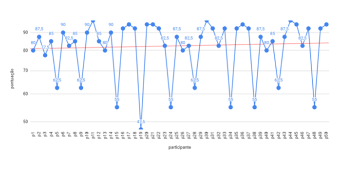
Gráfico das pontuações por participante e média do SUS
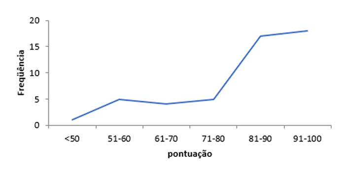
Gráfico de pontuação por frequência do SUS
6.6 — Acessibilidade Digital (eMAG)
Eliminar as barreiras na web pressupõe que sites e portais sejam projetados para que todas as pessoas possam compreender, navegar e interagir de maneira efetiva com páginas e conteúdos da internet, principalmente aquelas que tenham algum tipo de limitação, seja intelectual, física ou motora. Por essas razões, projetar sistemas acessíveis é um compromisso de todo e qualquer sistema do Governo Federal. As diretrizes foram baseadas no Modelo de Acessibilidade em Governo Eletrônico (eMAG).
Diretrizes eMAG Priorizadas nas Primeiras Entregas:
- Recomendação 1.1 – Respeitar os Padrões Web;
- Recomendação 1.2 – Organizar o código HTML de forma lógica e semântica;
- Recomendação 1.3 – Utilizar corretamente os níveis de cabeçalho;
- Recomendação 1.4 – Ordenar de forma lógica e intuitiva a leitura e tabulação;
- Recomendação 1.8 – Dividir as áreas de informação;
- Recomendação 2.1 – Disponibilizar todas as funções da página via teclado;
- Recomendação 2.3 – Não criar páginas com atualização automática periódica;
- Recomendação 2.7 – Assegurar o controle do usuário sobre as alterações temporais do conteúdo;
- Recomendação 3.4 – Informar o usuário sobre sua localização na página;
- Recomendação 3.5 – Descrever links clara e sucintamente;
- Recomendação 3.6 – Fornecer alternativa em texto para as imagens do sítio;
- Recomendação 3.11 – Garantir a leitura e compreensão das informações;
- Recomendação 3.12 – Disponibilizar uma explicação para siglas, abreviaturas e palavras incomuns;
- Recomendação 4.1 – Oferecer contraste mínimo entre plano de fundo e primeiro plano;
- Recomendação 4.2 – Não utilizar apenas cor ou outras características sensoriais para diferenciar elementos;
- Recomendação 6.2 – Associar etiquetas aos seus campos;
- Recomendação 6.3 – Estabelecer uma ordem lógica de navegação;
- Recomendação 6.5 – Fornecer instruções para entrada de dados;
- Recomendação 6.6 – Identificar e descrever erros de entrada de dados e confirmar o envio das informações.
6.7 — Resultados Alcançados
Validamos o protótipo da Sprint em um teste de usabilidade com 5 usuários com 100% de conclusão de tarefas. Após um ano do lançamento, os ganhos quantitativos e qualitativos foram expressivos:
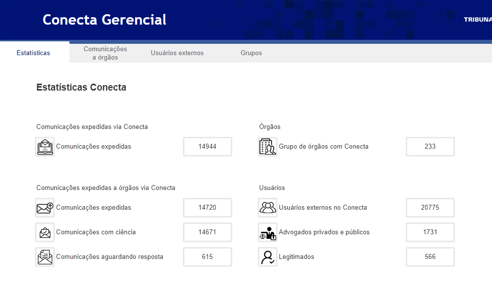
Números atualizados até 11/01/2021
07 — identidade visual
Para um sistema tão relevante como o CONECTA-TCU, criamos uma marca exclusiva pautada em três alicerces: comunicação, integração e aproximação. A marca traduz a aproximação entre o TCU, o cidadão e os órgãos públicos.
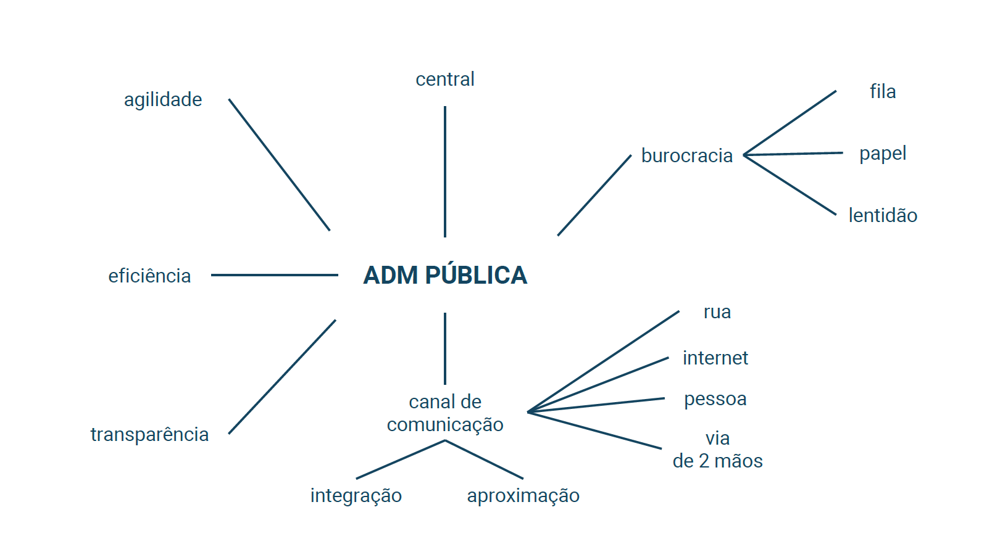
Mapa simplificado com os POs do CONECTA-TCU
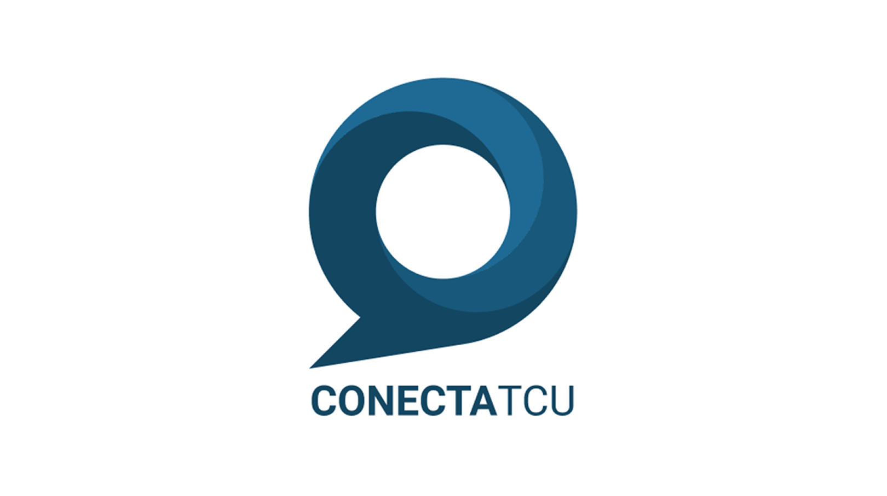
Logo CONECTA-TCU - assinatura vertical
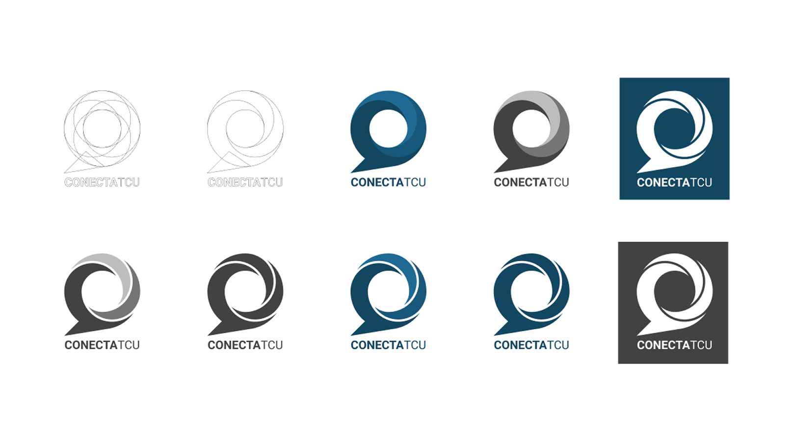
Estrutura e variações da marca
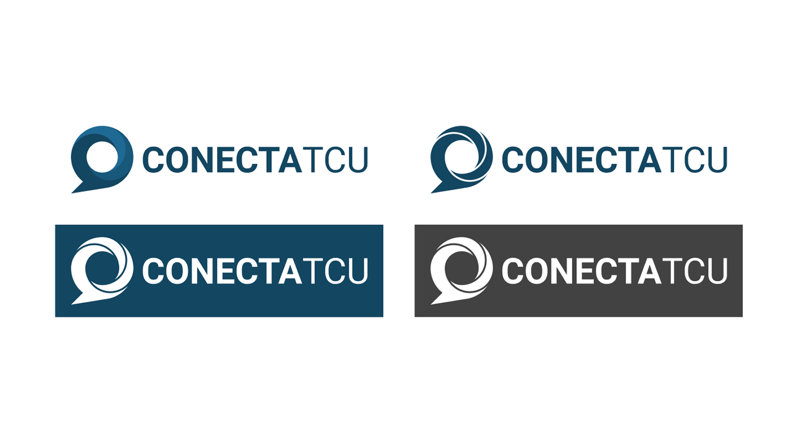
Assinatura horizontal
08 — depoimentos de gestores e parceiros
"Para um sistema tão relevante como o CONECTA-TCU, resolvemos criar uma marca exclusiva e, para isso, nos pautamos em três alicerces que motivaram a criação do sistema: ser um canal de comunicação para integrar e aproximar o TCU, o cidadão e os órgãos públicos."
— Tiago Hideki Niwa, chefe da Auditoria Interna da UTFPR“O Conecta proporcionou um maior entendimento dos processos e auditorias relacionadas à Eletrobras, além da organização das determinações e acórdãos."
— Márcia Pinheiro, gerente do Depto de Atendimento a Órgãos de Controle da Eletrobras"O sistema foi um marco divisor para a AGU... O tempo da obtenção da informação foi extremamente abreviado... Agora, a plataforma permite ter acesso automático por meio de uma autodeclaração. Essa melhoria foi um divisor, porque hoje nós podemos nos preocupar com o conteúdo e não mais com o acesso aos processos."
— Rodrigo Paiva, consultor jurídico da União no ES e ex-diretor do Depto de Assuntos Extrajudiciais (AGU)"Antes, as demandas do TCU entravam de maneiras diferentes e agora estão todas concentradas no Conecta, o que permite o assessoramento aos gabinetes superiores de forma mais completa. O fluxo das informações ficou muito mais objetivo."
— Cláudio Torquato, chefe da Assessoria Especial de Controle Interno do MAPA"A plataforma promoveu a melhoria na comunicação entre o FNDE e o TCU, tornando-a mais prática e eficiente."
— Divisão de Gestão de Informações e Controle de Demandas da Auditoria Interna do FNDE09 — o que aprendi & próximos passos
Cultura de UX e maturidade em equipes públicas.
Foram dois longos anos de muito trabalho, reuniões, pesquisas, facilitações de processos, fluxos e telas desenhadas. Um dos grandes desafios foi trazer o time para o mundo do processo de experiência do usuário, explicar a importância de cada etapa e caminhar para uma sólida cultura de UX. Evoluí muito meu repertório de ferramentas ao adaptar métodos para as exigências do setor público e para o cenário de home office.
O aprendizado mais importante foi entender e gerir processos de UX dentro de uma equipe multidisciplinar (desenvolvedores, POs, requisitos e gerentes), alinhando expectativas e restrições de tempo para entregar valor com alto rigor técnico.
Próximos Passos do Produto:
- Ampliar o número de órgãos e representantes legais credenciados e com acesso ao CONECTA-TCU;
- Permitir que o cidadão consulte informações não sigilosas de processos, acórdãos e determinações;
- Criação do Design System do sistema CONECTA-TCU.
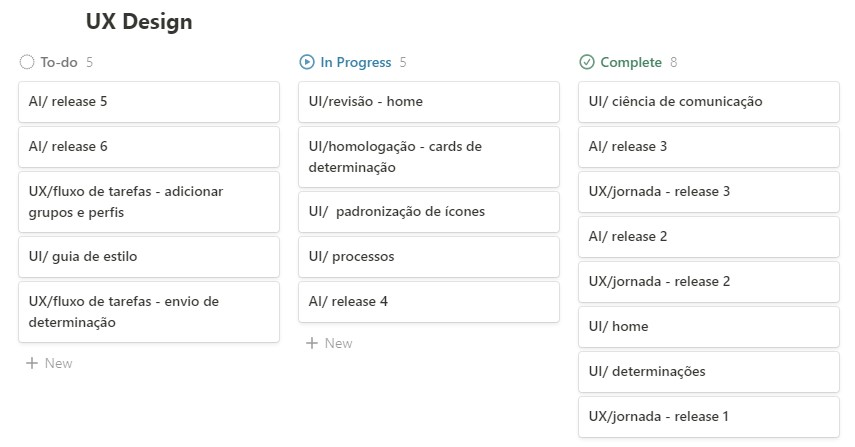
Quadro de tarefas de UX/UI Design do sistema CONECTA-TCU